Analog : 0 ~ 255 (8bit), 0 ~ 1023 (10bit), 0 ~ 4095 (12bit) Digital : 0 ~ 4095 (12bit)
Auto Gain / Exposure
Off / Once / Continuous
Gamma / LUT
Gamma 0 ~ 3.999 / Adjustable LUT (12bit to 12bit)
Video I/F
CameraLink / SDR x1
Video Format
Mono 8, Mono 10, Mono 12
Communication
RS232 via CameraLink Connector
Function Control
Gain Auto, Exposure Auto, Acquisition Frame Rate(Adjustable), Line Debouncer, Defect Pixel Correction, Shading Correction(FFC), Sharpness Enhancement, Contrast/Brightness Control, Sensor Cooling Control
GPIO
TTL Input/Output 2ch, OptoCoupled Input 2ch
Lens Mount
C mount
Optical Filter
900nm Long Pass
Power Supply
DC(12V ~ 24V ± 10%)
Consumption (Typical)
5.0W
Weight
< 400g
Dimension
55 x 55 x 74 ㎜ (Without Mount, Connector)
Operating / Storage
0℃ ~ +40℃ / -20℃ ~ +60℃ (with < 20~80% RH)
Vibration / Shock
98 m/s2 (10.0 G) / 196 m/s2 (20.0 G)
Standard Compliancy
CE (EN61326-1; 2013년; Class A)
Environments
RoHS / WEEE
3. 카메라 외관 사양
3.1 Appearance
HC-A130SW
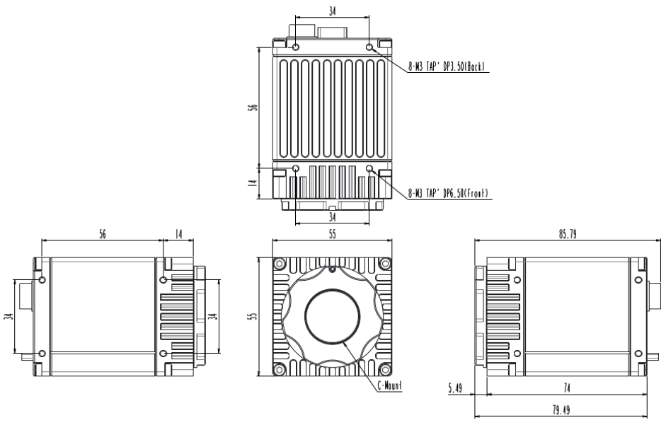
3.2 Back Panel
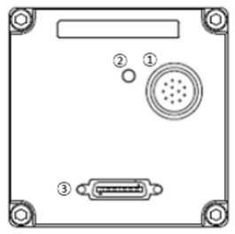
No.
Name
etc
1
Power & I/O Connector
12Pin Circular Connector
2
LED Indicator
LED
3
CameraLink Connector
Base (SDR Type)
3.3 LED Indicator Status
Indication
State
Off
No power
Solid orange
System booting
Solid green
Device – Host connected, but no data being transferred
Blinking green
Data being transferred
3.4 CameraLink Connector
3.4.1 CameraLink Connector1 (SDR Type)
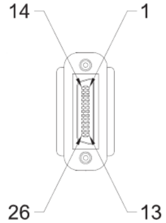
Pin No.
Signal Name
Pin No.
Signal Name
1
PoCL1
14
GND
2
X0-
15
X0+
3
X1-
16
X1+
4
X2-
17
X2+
5
Xclk-
18
Xclk+
6
X3-
19
X3+
7
SerTC+
20
SerTC-
8
SerTFG-
21
SerTFG+
9
CC1-
22
CC1+
10
CC2+
23
CC2-
11
CC3-
24
CC3+
12
CC4+
25
CC4-
13
GND
26
PoCL1
3.5 External I/O Connector
3.5.1 Circular Connector (12Pin)
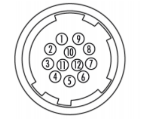
Pin No.
Name
IN/OUT
Description
1
GND
IN
Power GND
2
VCC
IN
12V ~ 24V Input Range
3
Line 7(-)
IN
OptoCoupled Trigger Input-
4
Line 7(+)
IN
OptoCoupled Trigger Input+, 3.3V~24V
5
Line 6(-)
IN
OptoCoupled Trigger Input-
6
Line 6(+)
IN
OptoCoupled Trigger Input+, 3.3V~24V
7
Line 4
IN/OUT
Direct IO, 3.3V
8
DGND
IN
Direct IO GND
9
NC
-
Do not Connect
10
Line 5
IN/OUT
Direct IO, 3.3V
11
VCC
IN
12V ~ 24V Input Range
12
GND
IN
Power GND
3.6 External I/O 내부 회로
3.6.1 Line 4, 5 (Direct IO)
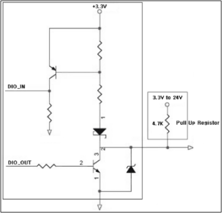
3.6.2 Line 6, 7 (OptoCoupled Input)
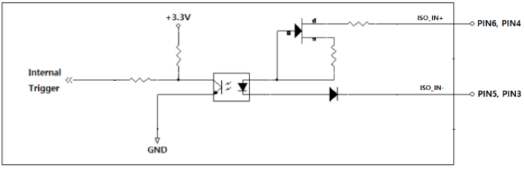
3.7 CameraLink Interface Timing
3.7.1 Mono or Color Bayer Order
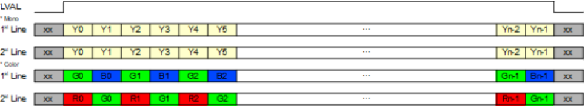
3.7.2 Data Order of the CameraLink
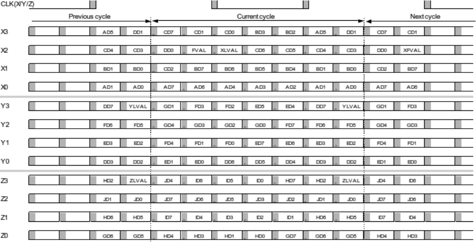
4. 카메라 기능
4.1 Image Format Control
4.1.1 Device Tap Geometry
Device Tap Geometry를 설정하는 기능입니다. Tap 설정에 따라 Line Period를 결정하는 HMax 값이 변경됩니다. HMax는 74.25MHz 기준 Clock 개수입니다.
Feature
Value
Description
Command
HMax
(Read Only)
1 Line Period의 Clock 개수를 출력합니다.
RHMAX
Device Tap Geometry
1X_1Y
CL Interface의 Data 전송 Tap 수를 설정합니다.
R/WTAPCFG
1X2_1Y
1X3_1Y
＊1 Line Period(us) = 1/74.25 * 'HMax'
＊카메라 Tap 설정과 Frame Grabber Camfile의 Tap 설정이 동일해야 정상적인 Image가 출력됩니다.
4.1.2 ROI (Region Of Interest)
ROI
Width, Height, Offset X, Offset Y를 설정함으로써 원하는 영역의 Image만 출력할 수 있습니다. 출력 Height Size가 작아질수록 Frame Rate이 증가합니다.
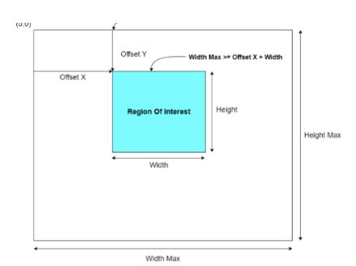
< Figure 1 – ROI Setting >
Feature
Value
Description
Command
WidthMax
(Read Only)
Image의 최대 출력 Size입니다.
RWIDTHMAX
HeightMax
(Read Only)
Image의 최대 출력 Size입니다.
RHEIGHTMAX
Width
(Integer)
Image의 출력 Size 및 Offset(Pixel 좌표)를 변경합니다. WidthMax ≥ Offset X + Width HeightMax ≥ Offset Y + Height
R/WWIDTH
Height
(Integer)
Image의 출력 Size 및 Offset(Pixel 좌표)를 변경합니다. WidthMax ≥ Offset X + Width HeightMax ≥ Offset Y + Height
R/WHEIGHT
Offset X
(Integer)
Image의 출력 Size 및 Offset(Pixel 좌표)를 변경합니다. WidthMax ≥ Offset X + Width HeightMax ≥ Offset Y + Height
R/WOFFSETX
Offset Y
(Integer)
Image의 출력 Size 및 Offset(Pixel 좌표)를 변경합니다. WidthMax ≥ Offset X + Width HeightMax ≥ Offset Y + Height
R/WOFFSETY
＊ROI로 인해 변경된 Frame Rate은 'Resulting Frame Rate', Line Period는 'HMax' Feature를 통해 확인할 수 있습니다.
＊단, 'Exposure Time'이 Frame Period(=1/Max.FrameRate)보다 긴 경우 Frame Rate이 감소할 수 있습니다. (Exposure 우선모드)
＊모델별 'Width', 'Height'의 특성은 아래와 같습니다.
Model
Minimum Width
Minimum Height
Width Unit
Height Unit
전 모델
64
32
8
4
< Table 1 – Minimum & Unit Size of ROI >
4.1.3 Binning
Horizontal 또는 Vertical 방향으로 인접한 Pixel끼리 누적하여 읽어내는 기능입니다. Decimation과 동일한 해상도를 갖는 반면, Binning은 영상 신호가 더해지기 때문에 감도 또한 약 두 배 가량 증가할 수 있습니다. Digital Binning이 적용되므로 Frame Rate은 증가하지 않으나, ROI를 함께 적용할 경우 Frame Rate이 증가할 수 있습니다.
＊Decimation으로 인해 변경된 Frame Rate은 'Resulting Frame Rate' Feature를 통해 확인할 수 있습니다.
＊단, 'Exposure Time'이 Frame Period(=1/Max.FrameRate)보다 긴 경우 Frame Rate이 감소할 수 있습니다. (Exposure 우선모드)
4.1.5 Reverse
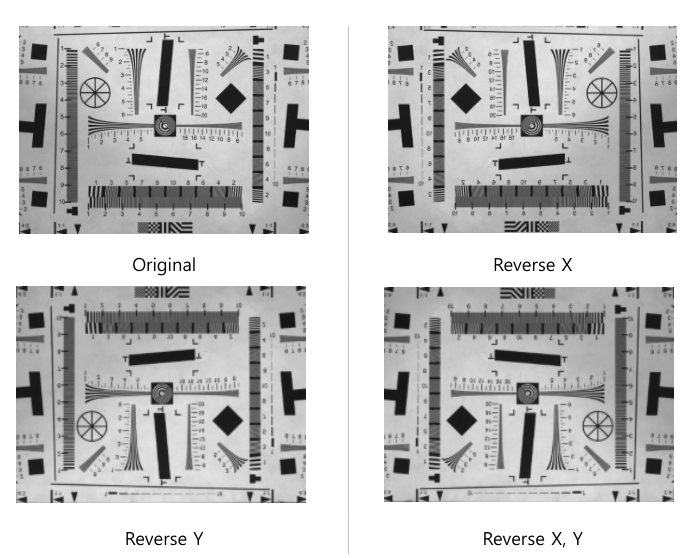
< Figure 4 – Reverse Image >
Feature
Value
Description
Command
ReverseX / ReverseY
True
Image가 좌/우 또는 상/하 반전됩니다.
R/WFLIPMODE
False
＊ROI와 Reverse를 동시에 사용할 경우, 반전된 Image로부터 ROI 기능이 적용됩니다. 즉 아래 그림과 같이 Reverse를 활성화할 경우 Image의 시작 좌표인 (0,0) Pixel의 위치가 반전됩니다. 이 때문에 Reverse 적용 이전과 동일한 영역
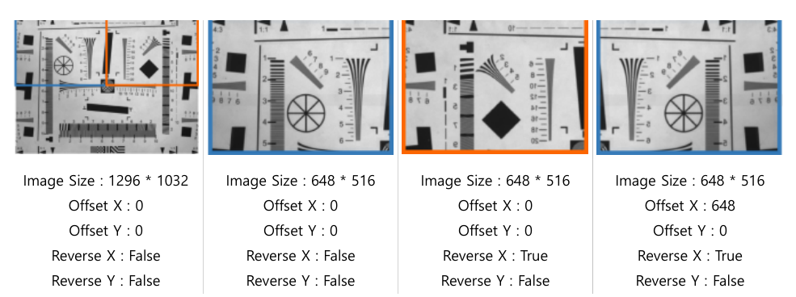
< Figure 5 – ROI & Reverse Image >
4.1.6 ADC Bit Depth
Sensor에서 Data를 Digital로 변환할 때 Bit의 Depth를 설정하는 기능입니다. ADC Bit Depth 설정에 따라 Max Frame Rate이 상이하며, 동일한 환경에서 8bit 모드 일 때 영상의 밝기가 10bit, 12bit일 때 영상의 밝기보다 약 4배 밝습니다.
Feature
Value
Description
Command
ADC Bit Depth
8bit
Sensor의 Digital Data Depth를 선택합니다.
R/WADCBIT
10bit
12bit
4.1.7 Pixel Format
카메라에서 출력하는 Image의 Pixel Format을 설정합니다. 각 Pixel Format별로 Image의 전송량에 차이가 있으므로, Bandwidth에 따라 Frame Rate이 변경될 수 있습니다.
Feature
Value
Description
Command
Pixel Format
Mono 8
Frame Grabber로 전송할 Image Data의 Format을 설정합니다.
R/WPIXFMT
Mono 10
Mono 12
＊Image Data의 Format은 Sensor의 'ADC Bit Depth' 보다 클 수 없습니다.
＊모델별로 지원하는 'Pixel Format'은 아래와 같습니다.
Model
Pixel Format Support
전 모델
Mono 8, Mono 10, Mono 12
< Table 2 – Pixel Format Values >
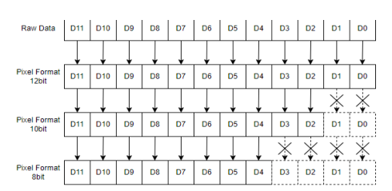
< Figure 6 – Pixel Format >
4.1.8 Test Pattern
Image Processing의 중간 단계에서 Image를 Test Pattern으로 치환하여 전송합니다. Test Pattern 기능을 활성화하더라도 ROI Size, Trigger 입력, Acquisition Frame Rate 등 Image 취득과 관련된 기능들은 유효합니다. Test Pattern Image는 8bit grey level(0~255DN)로 생성됩니다.
Image 취득 방법 및 타이밍을 제어합니다. Image 취득 방법으로는 크게 Freerun Mode(Trigger Mode = Off)와 Trigger Mode가 있으며 취득 지연을 설정할 수 있습니다.
Trigger Mode가 Off일 때, 카메라는 Freerun Mode로 동작합니다. Freerun Mode는 현재 설정에서 동작할 수 있는 최대 Frame Rate 기준으로 Internal Counter와 VD신호를 생성합니다. 이와 동시에 설정한 Exposure Time 만큼 노광 신호를 생성하여 Sensor를 동작시키고, Image를 취득하여 Frame Grabber로 전송합니다.
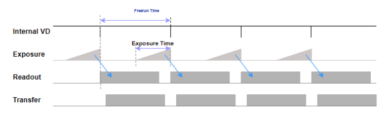
< Figure 8 – Freerun Mode >
Trigger Mode가 On일 때, 카메라는 Trigger Mode로 동작합니다. Trigger Mode는 External Trigger로 노광을 시작하고 노광 시간 또한 조절할 수 있습니다. Sensor가 노광을 완료하면 그 이후는 Freerun Mode와 동일하게 Image를 취득하여 Frame Grabber로 전송합니다.
＊Freerun Mode에서 'Acquisition Frame Rate Enable'이 'On'인 경우 'Acquisition Frame Rate'으로 동작하고, 'Off'인 경우 현재 설정에서 동작할 수 있는 최대 Frame Rate으로 동작합니다.
＊'Trigger Mode'가 'On'인 경우, 'Trigger Source' 설정에 따라 CC, External Trigger, Software Trigger에 의해 동작합니다.
＊CC1~3는 Frame Grabber 전용 프로그램에서 별도로 설정해야 합니다.
＊'Counter And Timer Control' 카테고리의 'Counter Event Source'를 'External Trigger Start'로 설정하면 카메라로 입력한 총 유효 Trigger 개수가 'Counter Value'로 출력됩니다. 'Counter Update Feature'를 'Execute'하여 현재 Counter 를 실시간으로 Update할 수 있습니다. 이 Counter는 'Counter Reset'을 'Execute'하여 0으로 초기화합니다. Trigger Delay는 Trigger 입력으로부터 Sensor의 노광을 일정 시간 지연시켜 동작하는 기능입니다. 카메라 입력 Trigger의 Timing이 조명이나 피사체의 위치 등 외부 환경의 Timing과 맞지 않을 때 Trigger Delay를 이용하여보다 명확한 Image를 취득할 수 있습니다. Line Debounce Time은 외부 I/O를 통과한 Trigger 신호의 채터링 노이즈(Chattering Noise)를 제거하는 기능입니다. 일정 시간 이상 Activation 상태를 유지하는 신호만 유효한 입력으로 판단하기 때문에 지연된
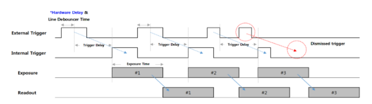
< Figure 11 – Trigger Delay & Line Debounce >
Feature
Value
Description
Command
Trigger Delay
0 ~ 57,844,677 (Unit : us)
Trigger 입력으로부터 Sensor 노광까지의 지연 시간 을 설정합니다.
R/WTRGDLY
Line Debounce Time
0 ~ 882 (Unit : us)
Line Debounce Time을 설정합니다.
R/WTRGFLTNUM
＊Trigger가 지연되는 도중 입력되는 새로운 Trigger는 무시됩니다. 입력 Trigger 주기보다 'Trigger Delay'가 더 클 경우, Trigger 누락에 의해 Frame Rate이 감소할 수 있습니다. (Figure 11 참고)
＊External Trigger 입력부터 실제 Sensor의 노광까지 일정 시간 지연(Hardware Delay+Exposure Start Delay)됩니다. (Appendix B, C 참고)
4.2.2 Exposure Control
카메라 노광 방식을 설정합니다. Internal Freerun Counter 또는 External Trigger에 의해 노광 시작 시점이 정해지면 Timed Shutter는 Exposure Time에 설정된 시간 만큼 노광하고, Trigger Width Shutter는 Trigger Mode에서 Trigger의 Pulse Width만큼 노광합니다. Exposure Time은 Exposure Mode가 Timed Shutter인 경우에만 적용됩니다.
＊단, 'Exposure Time'이 Frame Period(=1/Max.FrameRate)보다 긴 경우 Frame Rate이 감소할 수 있습니다. (Exposure 우선모드)
＊'Trigger Mode'가 'Off'인 경우 또는 'Trigger Source'가 'Software'인 경우 'Timed' Shutter로 동작합니다.
＊'Counter And Timer Control' 카테고리의 'Counter Event Source'를 'Exposure Start' 또는 'Exposure Stop'으로 설정 하면 실제 노광의 시작과 종료 횟수가 'Counter Value'로 출력됩니다. 'Counter Update Feature'를 'Execute'하여 현재 Counter를 Update할 수 있습니다. 이 Counter는 'Counter Reset' Command에 의해 0으로 초기화됩니다.
＊External Trigger 입력부터 실제 Sensor의 노광까지 일정 시간 지연(Hardware Delay+Exposure Start Delay)됩니다. (Appendix B, C 참고)
＊'Exposure Time'과 실제 노광 시간 사이에 오차(Exposure Offset)가 존재합니다. (Appendix C 참고) Exposure Auto는 카메라가 Exposure Time을 자동으로 조절하여 원하는 밝기의 Image를 취득하는 기능으로, Exposure Mode가 Timed인 경우에만 사용 가능합니다.
Feature
Value
Description
Command
Exposure Auto
Off
- Off : Exposure Time을 수동으로 설정
R/WAECMODE
Once
- Once : Image가 Target과 같은 밝기가 되면 Exposure Auto Off
Continuous
- Continuous : 지속적으로 Exposure Time을 조절하여 Target과 같은 밝기 유지
Auto Exposure Target
0 ~ 255 (DN @8bit)
원하는 평균 밝기를 설정합니다.
R/WAETARGET
Auto Exposure Time Lower Limit
100 ~ 3,000,000 (Unit : us)
Exposure Auto 시, Exposure Time의 가변 범위를 설정합니다. Lower Limit ≤ Upper Limit_ _
R/WAEMIN
Auto Exposure Time Upper Limit
R/WAEMAX
Exposure Update Feature
Execute
Exposure Time을 Update합니다.
-
＊단, 'Exposure Time'이 Frame Period(=1/Max.FrameRate)보다 긴 경우 Frame Rate이 감소할 수 있습니다. (Exposure 우선모드)
＊'Exposure Auto'와 'Gain Auto'를 동시에 사용하는 경우는 Image와 Target의 밝기에 따라 동작이 다릅니다.
＊Image의 밝기가 증가해야 하는 경우, 'Exposure Auto' 적용 후 'Gain Auto'가 적용됩니다.
＊Image의 밝기가 감소해야 하는 경우, 'Gain Auto' 적용 후 'Exposure Auto'가 적용됩니다.
4.2.3 Frame Rate Control
Freerun Mode에서 Frame Rate을 제어하는 기능입니다.
Feature
Value
Description
Command
Acquisition Frame Rate Enable
Off
Freerun Mode에서 Acquisition Frame Rate 기능 활성화 여부를 결정합니다.
R/WFREERUNEN
On
Acquisition Frame Rate
1 ~ Max.FPS
Freerun Mode에서 원하는 Frame Rate을 설정합니다.
R/WFREERUN
Resulting Frame Rate
(Read Only)
Freerun Mode에서 실제 카메라의 Frame Rate을 출력합니다.
REALFREERUN
＊Max.FPS는 'Device Tap Geometry', ROI, Decimation, 'Pixel Format', 'Exposure Time' 설정에 따라 변경됩니다.
＊Freerun Mode는 'Trigger Mode' = 'Off'입니다.
4.3 Digital I/O Control
외부 I/O 신호를 설정하는 기능입니다. 설정을 원하는 Line을 선택하여 Input/Output, 위상을 변경할 수 있습니다.
Feature
Value
Description
Command
Line Selector
Line 1 ~ 7
세부 설정을 원하는 Line을 선택합니다. - Line 1~3 : CC1~3 - Line 4, 5 : Direct I/O - Line 6, 7 : OptoCoupled Input
-
Line Mode
Input
Line 1~3, 6, 7? Input ??? ?????.
R/WLINEMODE
Output
Line 4, 5? Input/Output ??? ?????.
Line Inverter
True
- True : Line? Input/Output ?? 180o ??
R/WLINEINVEN
False
- False : Line? Input/Output ?? ??
Line Status
(Read Only)
선택한 Line의 현재 상태를 출력합니다.
RLINESTATUS
Line Status Update Feature
Execute
모든 Line의 현재 상태를 Update합니다.
-
＊'Exposure Mode'가 'Trigger Width'인 경우, 'Line Inverter'는 Image의 밝기에 영향을 줄 수 있습니다.
＊'Line Status'의 경우, 'True'는 Logical High, 'False'는 Logical Low입니다.
＊I/O Connector가 연결되지 않은 Floating 상태인 경우, 'Line Status'는 'True'를 출력합니다.
카메라 외부로 출력하는 Strobe 신호를 설정하는 기능입니다. Freerun Mode에서는 Timer Strobe 신호의 생성 시점을 노광 시작 또는 Internal VD Start 시점으로 설정할 수 있습니다. VD가 초기화되는 시점이 Shutter
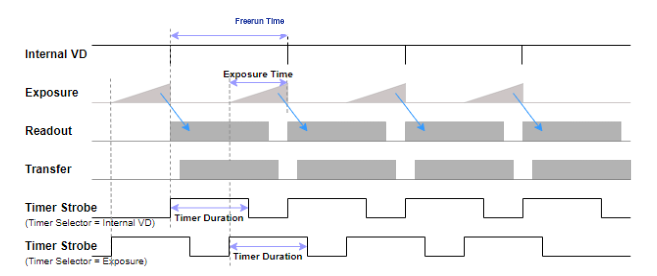
< Figure 12 – Timer Strobe of Freerun Mode >
Trigger Mode에서는 Timer Strobe 신호의 생성 시점을 노광 시작 또는 External Trigger 입력 시점으로 설정 할 수 있습니다. External Trigger 입력 시점으로 Timer Strobe를 생성할 경우, Trigger Delay와 Hardware
＊Trigger Mode에서는 Internal Counter가 동작하지 않으므로, 'Internal VD' 사용이 불가합니다.
4.4.2 Counter Control
카메라 동작을 모니터링하는 기능입니다. 카메라가 Trigger를 입력 받고 노광하여 Image를 출력하는 과정을 단계별 Counter로 모니터링할 수 있습니다. 또한 Frame 주기보다 빠른 속도의 Trigger 입력 등 카메라 사양 을 초과하는 신호 입력에 대한 확인이 가능합니다.
＊Gamma 기능은 LUT 기능과 동시 사용이 불가합니다. Gamma 기능 Enable 시 LUT 기능은 Disable됩니다.
4.6 LUT Control
LUT(Look Up Table) 기능은 Digital Pixel 값을 Table의 입력값 대비 출력값으로 1:1 매칭시켜 변환하는 기능입니다. Table의 각 Index(Input Image)는 미리 정의한 LUT Value(Output Image)의 Pixel로 치환됩니다.
Feature
Value
Description
Command
LUT Enable
True
LUT 기능 활성화 여부를 결정합니다.
R/WLUTEN
False
LUT Index
0 ~ 4095
LUT Index를 선택합니다.
R/WLUTDATA
LUT Value
0 ~ 4095
선택한 LUT Index의 출력값을 설정합니다.
＊LUT 기능은 Gamma 기능과 동시 사용이 불가합니다. LUT 기능 Enable 시 Gamma 기능은 Disable됩니다.
＊Ex) y=2x 형태로 Table을 사용할 경우 저조도 Pixel은 감도 향상 효과를 볼 수 있는 반면, 고조도 Pixel은 포화 상태가 되므로 Dynamic Range에 손실 발생
Index
0
1
2
3
...
256
...
510
511
512
513
Value
0
2
4
6
…
512
...
1022
1023
1023
1023
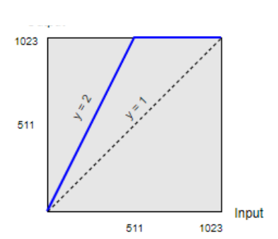
< Figure 18 – Look Up Table Graph >
4.7 Defect Pixel Control
카메라의 Defect Pixel을 관리하는 기능입니다. 출하 시 불량 화소에 대한 보정이 이루어집니다. 하지만 사용자가 불량 화소라고 생각하는 Pixel을 추가로 정의하여 보정할 수 있습니다. 카메라의 User Set 1~3 영역마다 최대 1024개의 불량 화소를 저장할 수 있습니다.
- Mark White with Black Background : Defect Pixel? White Pixel? ?????. (Black Background)
Defect Pixel Replacement Count
1 ~ 1024
보정할 Defect Pixel의 개수입니다.
R/WDEFCNT
Defect Pixel Index
0 ~ 1023
보정할 Defect Pixel의 Index입니다.
R/WDEFCORR
Defect Pixel X Coordinate
0 ~ WidthMax-1
보정할 Defect Pixel의 X축 좌표입니다. Pixel 좌표는 0부터 시작합니다.
Defect Pixel Y Coordinate
0 ~ HeightMax-1
보정할 Defect Pixel의 Y축 좌표입니다. Pixel 좌표는 0부터 시작합니다.
Defect Pixel Replace Execute
Execute
입력한 Defect Pixel의 정보를 적용합니다.
WDEFEXEC WIMMDEFCOR
＊Ex) 제품 출하 시 20개의 Defect Pixel이 보정된 상태에서 사용자가 두 개의 Pixel을 추가하는 경우
DefectPixel ReplaceCount
DefectPixel Index
DefectPixel XCoordinate
DefectPixel YCoordinate
Remarks
19
18
...
...
Factory Defined
20
19
...
...
Factory Defined
21
20
(156, 31)
(1131, 125)
User Defined
22
21
(208, 114)
(321, 611)
User Defined
< Table 6 – User Define Example >
＊보정 이후에는 'UserSetSave' Command를 이용하여 원하는 User Set 영역에 저장해야 합니다.
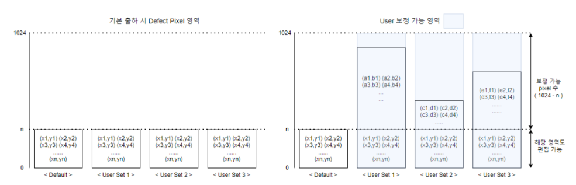
< Figure 19 – Defect Pixel Access Area >
4.8 Flat Field Correction
Flat Field Correction(FFC)은 촬영한 Image의 밝기 값을 균일하게 보정하는 기능입니다. 밝기 값이 균일하지 않은 원인으로는 렌즈 그림자에 의한 영향, 조명 밝기의 불균일, 각 Sensor Pixel의 감도 차이 등이 있습니다.
Feature
Value
Description
Command
FFC Enable
Off
FFC 기능 활성화 여부를 결정합니다.
R/WFFCEN
On
Black Calibration
Execute
Black Calibration을 수행합니다.
WBLACKCAL
White Calibration
Execute
White Calibration을 수행합니다.
WWHITECAL
FFC User Selector
0 ~ 3
FFC Data를 Save/Load 할 영역을 선택합니다.
-
FFC Save
Execute
선택한 Flash 영역에 FFC Data를 저장합니다.
WFFCSAVE
FFC Load
Execute
선택한 Flash 영역에서 FFC Data를 로드합니다.
WFFCLOAD
FFC Abort
Execute
현재 수행 중인 FFC Function을 강제로 취소합니다.
WFFCABORT
FFC Process Status
(Read Only)
FFC Function의 동작 상태를 확인할 수 있습니다. - Complete : FFC Function 완료 - Get Black Image : Black Image 취득 중 - Get White Image : White Image 취득 중 - Black Calibrating : BlackCalibration 진행 중 - White Calibrating : WhiteCalibration 진행 중 - FFC Erasing : FFC Data 삭제 중 - FFC Saving : FFC Data 저장 중 - FFC Loading : FFC Data 로드 중
RFFCSTAT
FFC Update Feature
Execute
FFC Process Status를 Update합니다.
-
＊모델별로 지원하는 FFC 방식은 아래와 같습니다.
Model
FFC
전 모델
Pixel by Pixel
< Table 7 – FFC Mode >
＊소모 전력 및 온도 안정화를 위해 FFC 기능 Disable 시에는 FFC 관련 기능이 동작하지 않습니다. 'FFC Enable'을 'On'으로 변경한 후 Calibration, Save, Load 등을 수행해야 합니다.
＊FFC 이전에 Defect Correction이 선행되어야 하고, Defect Filter가 Enable인 조건에서 Calibration해야 정확한 보정 Image를 출력할 수 있습니다.
＊'White Calibration' 이전에 'Black Calibration'이 선행되어야 하고, 제품 출하 시 'Black Calibration'을 수행하여 출하합니다. 실제 사용 환경(렌즈 등)에서 'White Calibration'을 수행하면 Image의 밝기 차이 보정이 가능하고, 필요 시 사용자가 'Black Calibration'부터 다시 진행할 수 있습니다.
< Figure 21 – Black Calibration Image & Histogram >
White Calibration은 실제 사용 환경(렌즈 등)에서 밝은 Image를 취득하여 보정합니다. 밝기가 균일한 피사체(또는 조명)을 촬상하여 평균 200DN 이하의 Image로 Sensor의 가장자리 Shading 또는 기타 외부 환경들에 의한 밝기 차이를 하단 그래프와 같이 보정합니다.
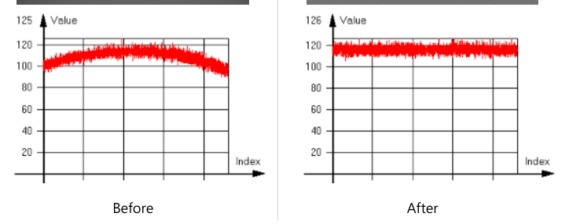
< Figure 22 – White Calibration Image & Histogram >
4.9 Sharpness Enhancement
Sharpness Enhancement는 Image에 있는 윤곽선을 강조하여 선명하게 보정하는 기능입니다. Sharpness Enhancement 설정에 따라 보다 선명한 Image를 획득할 수 있으나, Noise도 함께 강조될 수 있습니다.
Feature
Value
Description
Command
Sharpness Enable
Off
Sharpness 기능 활성화 여부를 결정합니다.
R/WSHARPEN
On
Sharpness Strength
0 ~ 15.996
Sharpness Enhancement의 강도를 설정합니다.
R/WSHARPSTR
Sharpness Filter Size
0.001 ~ 4
Sharpness Enhancement Filter Size를 설정합니다.
R/WSHARPSIZE
＊Ex) Sharpness Filter Size = 1.5
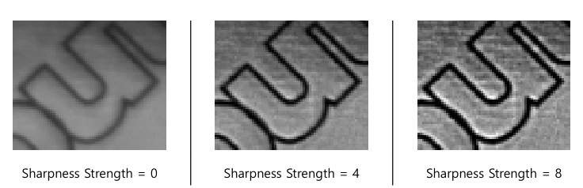
< Figure 23 – Sharpness Enhancement >
4.10 Contrast Brightness Control
4.10.1 Contrast
Contrast는 영상의 대비를 조절합니다.
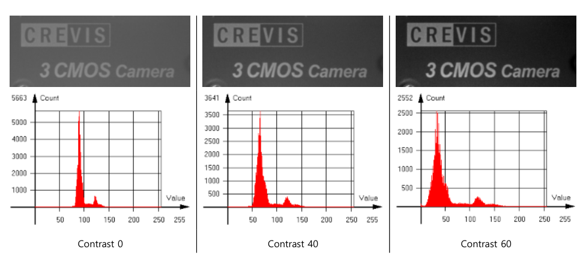
< Figure 24 – Contrast >
Feature
Value
Description
Command
Contrast
-99 ~ 99
Contrast를 조절합니다.
R/WCONTRAST
4.10.2 Brightness
Brightness는 영상의 밝기를 조절합니다. 설정값 512(12bit 기준)는 8bit 영상에서 약 32DN 정도 밝기를 증가 시킵니다.
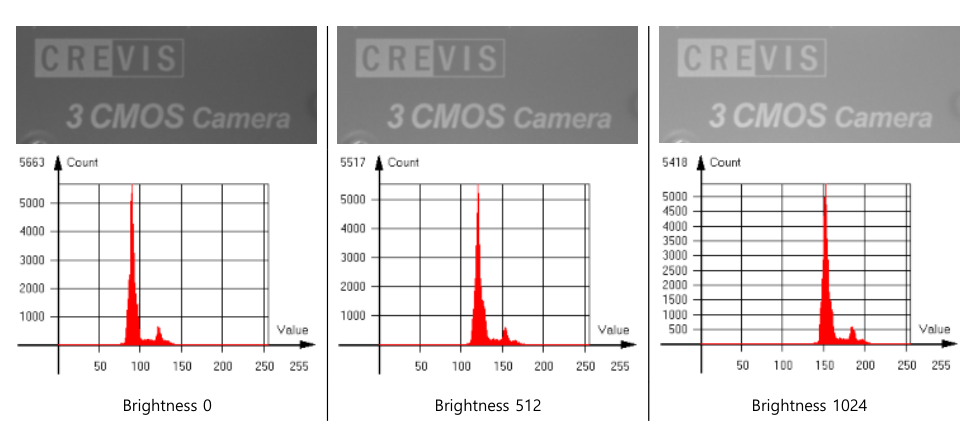
< Figure 25 – Brightness >
Feature
Value
Description
Command
Brightness
-2047 ~ 2047 (Unit : 12bit DN)
Brightness를 조절합니다.
R/WBRIGHTNESS
4.10.3 Histogram Stretch
Histogram Stretch를 이용하여 영상을 보정할 수 있습니다. Histogram Stretch Min을 800으로 설정한 경우, 설정값 800(12bit 기준)은 8bit 영상에서 약 50DN이므로 50DN을 0DN으로 Stretching하여 영상을 출력합니다. Histogram Stretch Max를 2400으로 설정한 경우, 설정값 2400(12bit 기준)은 8bit 영상에서 약 150DN이
Histogram의 Max 값을 설정합니다. 설정 값에 해당 하는 밝기를 4095으로 Stretching합니다.
R/WCBMAX
＊Ex) Min = 320, Max = 2000으로 설정한 경우, 8bit 기준 20DN, 125DN을 각각 0DN, 255DN으로 Stretching함
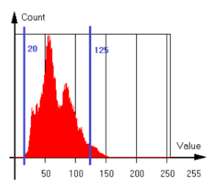
< Figure 27 – Histogram of Original Image >
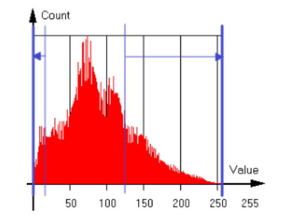
< Figure 28 – Histogram of Min, Max Control >
4.10.4 Auto Contrast
Auto Contrast는 Factor와 Target을 설정하여 자동으로 영상을 보정하는 기능으로, Factor 설정값을 Target 설정값으로 Stretching하여 영상을 보정합니다. Factor Low와 Factor High는 각각 영상 전체 Pixel에서 하위, 상위 백분율 값이고, Target Low와 Target High는 12bit DN값(0~4095)입니다.
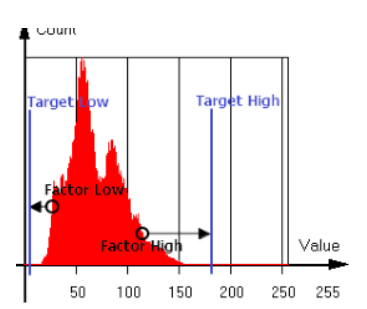
< Figure 29 – Histogram of Auto Contrast >
Feature
Value
Description
Command
Auto Contrast Mode
Off
- Off : Contrast, Brightness를 수동으로 설정
R/WCBAUTOMODE
Once
- Once : 각 Factor가 Target과 같은 밝기가 되면 Auto Contrast Off
Continuous
- Continuous : 지속적으로 Contrast, Brightness를 조절하여 영상 유지
Auto Contrast Factor Low
0 ~ 50 (Unit : %)
Auto Contrast Factor Low 값을 설정합니다. 영상 전체 Pixel의 하위 백분율입니다.
R/WCBAUTOPLO
Auto Contrast Factor High
0 ~ 50 (Unit : %)
Auto Contrast Factor High 값을 설정합니다. 영상 전체 Pixel의 상위 백분율입니다.
R/WCBAUTOPHI
Auto Contrast Target Low
0 ~ Auto Contrast Target High-10 (Unit : 12bit DN)
Auto Contrast Target Low 값을 설정합니다. Auto Contrast Factor Low 설정에 해당하는 밝기(DN)를 Target 밝기(DN)로 Stretching합니다.
R/WCBAUTOTLO
Auto Contrast Target High
Auto Contrast Target Low+10 ~ 4095 (Unit : 12bit DN)
Auto Contrast Target High 값을 설정합니다. Auto Contrast Factor High 설정에 해당하는 밝기(DN)를 Target 밝기(DN)로 Stretching합니다.
Sensor 온도를 제어하는 기능입니다. 가장 좋은 품질을 보증하는 Sensor의 온도는 15℃입니다. 이를 위해 Sensor 내부에는 Thermoelectric Cooler가 내장되어 있습니다. Sensor 온도는 자동/수동으로 제어가 가능합니다. 자동 모드는 Sensor Cooling Target 설정 온도(℃)가 Cooling에 적용됩니다. Sensor 온도와 Case 온도를 실시간으로 비교하여 전압을 제어합니다. 수동 모드는 Target 온도와 상관 없이 Sensor Cooling Voltage 설정 전압(V)이 Cooling에 적용됩니다. 두 가지 모드 모두 실제 Cooling에 적용되는 전압은 Sensor Cooling Applied Voltage에서 확인할 수 있습니다. 기본 설정은 자동 모드, Target 온도 15℃입니다.
Feature
Value
Description
Command
Sensor Cooling Auto
Off
Sensor Cooling Auto 기능 활성화 여부를 결정합니다.
R/WTECMODE
On
Sensor Cooling Target
10 ~ 40 (Unit : ℃)
Sensor Target 온도를 설정합니다. Sensor Cooling Auto가 On일 때에만 설정이 유효합니다.
R/WTECTARGET
Sensor Cooling Voltage
-8 ~ 8 (Unit : V)
Sensor Cooling에 적용할 전압을 설정합니다. Sensor Cooling Auto가 Off일 때에만 설정이 유효합니다.
R/WTECVOL
Sensor Cooling Applied Voltage
(Read Only) (Unit : V)
실제 Cooling에 적용되는 전압입니다.
RCURTECVOL
Sensor Cooling Voltage Feature
Execute
Sensor Cooling Applied Voltage를 Update합니다.
-
＊Sensor 온도와 Case 온도는 'Device Control' 카테고리의 'Device Temperature Selector', 'Device Temperature'에서 확인할 수 있습니다. 'Temperature Update Feature'를 이용해 현재 온도를 Update할 수 있습니다.
＊'Device Temperature'에 Display되는 Case 온도와 Cooling 알고리즘에 적용되는 Case 온도는 카메라 내부 프레임의 온도입니다.
＊Sensor Cooling 정도에 따라 소비 전력이 증가할 수 있습니다. 소비 전력과 영상 품질을 고려하여 Target 온도(자동 모드) 또는 전압(수동 모드)를 설정해야 합니다.
＊Built-in Thermoelectric Cooler의 최대 Cooling Range는 40℃입니다. 자동 모드의 경우, Sensor 온도와 Case 온도의 차이가 40℃를 초과하지 않도록 Target 온도를 자동 조절합니다. 따라서 Case 온도가 Target 온도보다 40℃ 이상 상승할 경우 Sensor 온도가 함께 상승할 수 있으며, 필요에 따라 추가 방열 대책을 강구해야 합니다.
＊Cooling에 적용되는 전압에 따라 발열이 증가할 수 있습니다. 수동 모드로 전압을 설정할 때, Sensor 온도와 Case 온도, 주변 온도를 모두 고려해야 합니다.
Read Device Temperature 0 : Sensor / 1 : FPGA / 2 : Case
Image Format Control
RHMAX
-
-
Read HMax
RTAPCFG
-
-
Read/Write CL Output Tap
WTAPCFG
1 / 2 / 3
-
RWIDTHMAX
-
-
Read WidthMax
RHEIGHTMAX
-
-
Read HeightMax
RWIDTH
-
-
Read/Write Width Max : WidthMax – Offset X
WWIDTH
64 ~ Max
-
RHEIGHT
-
-
Read/Write Height Max : HeightMax – Offset Y
WHEIGHT
32 ~ Max
-
ROFFSETX
-
-
Read/Write Offset X Max : WidthMax – Width
WOFFSETX
0 ~ Max
-
ROFFSETY
-
-
Read/Write Offset Y Max : HeightMax – Height
WOFFSETY
0 ~ Max
-
RBENMODE
-
-
Read/Write Binning Mode 0x00 : Binning H Average & Binning V Average / 0x01 : Binning H Sum & Binning V Average / 0x10 : Binning H Average & Binning V Sum / 0x11 : Binning H Sum & Binning V Sum
WBENMODE
00 / 01 / 10 / 11
-
RBEN
-
-
Read/Write Binning 0x11 : Normal / 0x12 : Binning H / 0x21 : Binning V / 0x22 : Binning H & V
WBEN
11 / 12 / 21 / 22
-
RSKIP
-
-
Read/Write Decimation 0x11 : Normal / 0x12 : Decimation H / 0x21 : Decimation V / 0x22 : Decimation H & V
WSKIP
11 / 12 / 21 / 22
-
RFLIPMODE
-
-
Read/Write Reverse X, Y 0 : Normal / 1 : Reverse Y / 2 : Reverse X / 3 : Reverse X & Y
Read/Write Exposure Time(us) Min : Minimum Exposure Time
WSHTSET
Min ~ 2DC6C0
-
RAECMODE
-
-
Read/Write Auto Exposure Control Mode 0 : Off / 1 : Once / 2 : Continuous
WAECMODE
0 / 1 / 2
-
RAETARGET
-
-
Read/Write Auto Exposure Target
WAETARGET
0 ~ FF
-
RAEMIN
-
-
Read/Write Auto Exposure Time Lower Limit Max : Auto Exposure Time Upper Limit
WAEMIN
64 ~ Max
-
RAEMAX
-
-
Read/Write Auto Exposure Time Upper Limit Min : Auto Exposure Time Lower Limit
WAEMAX
Min ~ 2DC6C0
-
RFREERUNEN
-
-
Read/Write Acquisition Frame Rate Enable 0 : Off / 1 : On
WFREERUNEN
0 / 1
-
RFREERUN
-
-
Read/Write Frame Period(us) Min : Minimum Frame Period
WFREERUN
Min ~ F4240
-
RMINFREERUN
-
-
Read Minimum Frame Period(us)
REALFREERUN
-
-
Read Real Frame Period(us)
Digital IO Control
RLINEMODE
0 / 1 / 2 / 3 / 4 / 5 / 6
-
Read/Write Line Mode [P1] 0 : Line 1 (CC1) / 1 : Line 2 (CC2) / 2 : Line 3 (CC3) / 3 : Line 4 (GPIO1) / 4 : Line 5 (GPIO2) / 5 : Line 6 (OptoCoupled1) / 6 : Line 7 (OptoCoupled2) [P2] 0 : Input / 1 : Output
WLINEMODE
3 / 4
0 / 1
RLINEINVEN
0 / 1 / 2 / 3 / 4 / 5 / 6
-
Read/Write Line Inverter Enable [P1] 0 : Line 1 (CC1) / 1 : Line 2 (CC2) / 2 : Line 3 (CC3) / 3 : Line 4 (GPIO1) / 4 : Line 5 (GPIO2) / 5 : Line 6 (OptoCoupled1) / 6 : Line 7 (OptoCoupled2) [P2] 0 : Off / 1 : On
WLINEINVEN
0 / 1 / 2 / 3 / 4 / 5 / 6
0 / 1
RLINESTATUS
0 / 1 / 2 / 3 / 4 / 5 / 6
-
Read Line Status 0 : Line 1 (CC1) / 1 : Line 2 (CC2) / 2 : Line 3 (CC3) / 3 : Line 4 (GPIO1) / 4 : Line 5 (GPIO2) / 5 : Line 6 (OptoCoupled1) / 6 : Line 7 (OptoCoupled2)
RLINESRC
3 / 4
-
Read/Write Line Source [P1] 3 : Line 4 (GPIO1) / 4 : Line 5 (GPIO2) [P2] F : Off / 0 : Timer 1 Active / 1 : Exposure Active / 2 : User Output 1 / 3 : User Output 2 / 4 : User Output 3
WLINESRC
3 / 4
F / 0 / 1 / 2 / 3 / 4
RUSEROUTPUT
0 / 1 / 2
-
Read/Write User Output Value [P1] 0 : User Output 1 / 1 : User Output 2 / 2 : User Output 3 [P2] 0 : Low / 1 : High